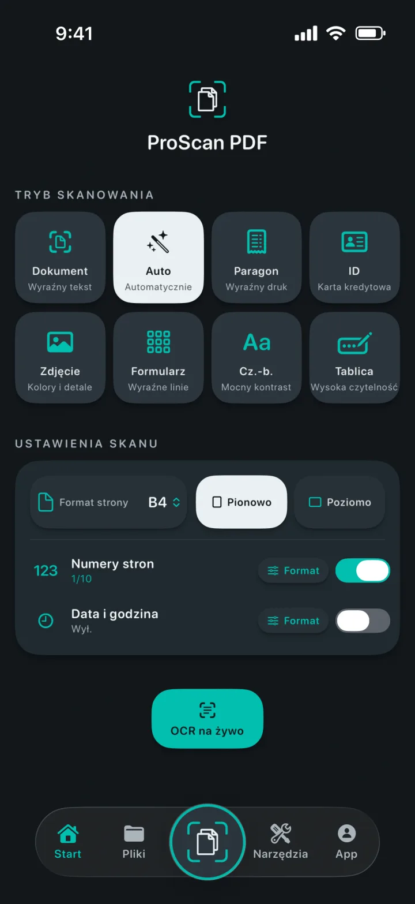
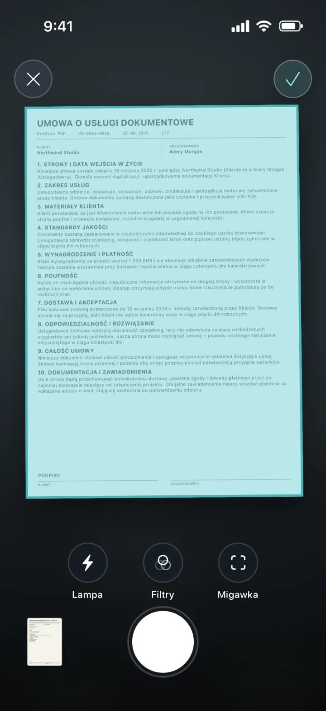
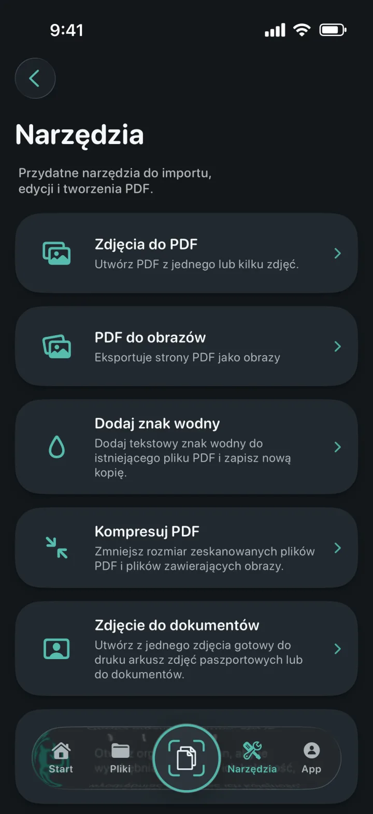
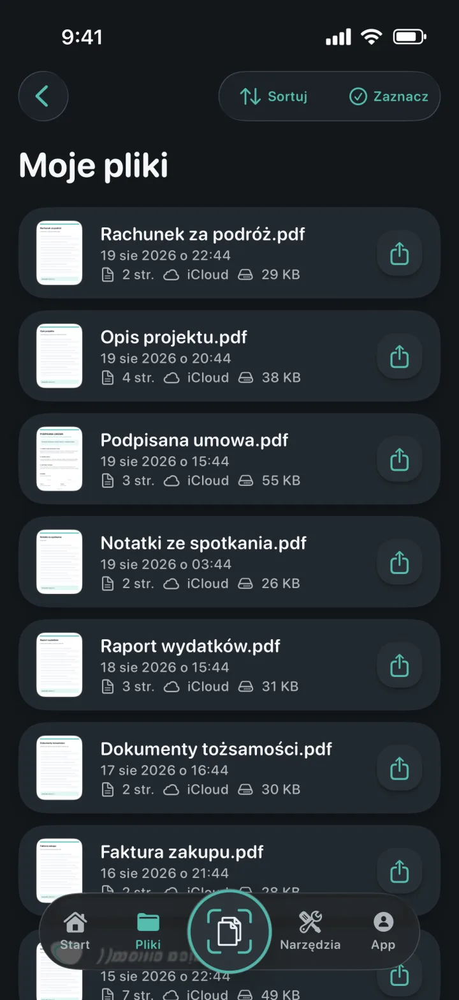
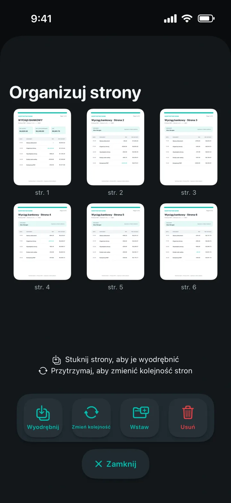
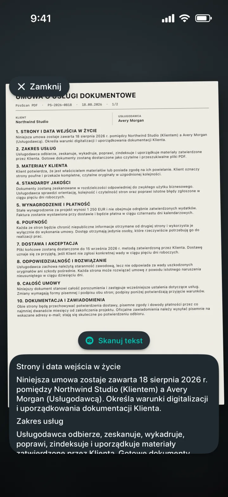

Zdjęcia do PDF
Zmień jedno lub wiele zdjęć w dopracowany plik PDF.
Skaner, który rozumie każdą stronę
Zmieniaj dokumenty, paragony, dowody, notatki i zdjęcia w dopracowane pliki PDF. Następnie edytuj, podpisuj, zabezpieczaj i udostępniaj je bez reklam i znaków wodnych.

Skaner, który rozumie każdą stronę
Wybierz odpowiedni tryb, ustaw stronę w kadrze i pozwól skanerowi dokumentów Apple wykonać zdjęcie. Przed rozpoczęciem ustaw format, orientację, numery stron oraz datę i godzinę.

Wszystkie narzędzia PDF w jednym miejscu
Importuj, konwertuj, edytuj i twórz pliki PDF w jednym uporządkowanym miejscu.

Zmień jedno lub wiele zdjęć w dopracowany plik PDF.
Eksportuj każdą stronę PDF jako obraz, a potem zapisz ją lub udostępnij.
Dodaj kolorowy tekstowy znak wodny do nowej kopii PDF.
Zmniejsz rozmiar zeskanowanych i obrazowych plików PDF.
Kadruj, sprawdzaj i eksportuj dokładne formaty lub arkusze do druku.
Wyodrębniaj, zmieniaj kolejność, wstawiaj lub usuwaj strony PDF.
Twórz edytowalne pliki Word, zachowując układ tam, gdzie to możliwe.
Twórz przeszukiwalne kopie i znajduj tekst w przeglądarce.


Dokumenty zawsze uporządkowane
Lokalne kopie przyspieszają otwieranie biblioteki. Prywatna kopia zapasowa iCloud pomaga zachować dostęp do dokumentów po przejściu na inne urządzenie Apple.
Prywatność wpisana w projekt
Skanowanie, OCR i przetwarzanie plików PDF odbywa się lokalnie na Twoim urządzeniu. ProScan PDF nie przesyła dokumentów na własne serwery.
Przeczytaj Politykę prywatnościOCR i przeszukiwalne dokumenty
Przechwytuj tekst na żywo, wyodrębniaj edytowalną treść ze skanów lub twórz przeszukiwalne kopie PDF. Wszystko jest przetwarzane na iPhonie lub iPadzie.

Zaprojektowany dla Ciebie
Każdy motyw zmienia interfejs aplikacji i oferuje dopasowaną ikonę ekranu początkowego.
Skanerowy turkus i papierowa biel na graficie.
Elektryczny cyjan i fiolet na głębokiej czerni.
Czyste niebieskie elementy na jasnej papierowej powierzchni.
Koral, fiolet i mięta na delikatnym graficie.
Szampański i pudrowy róż na eleganckim granacie.
Chłodne srebro i polerowane złoto na graficie.
Ciepły krem i terakota na głębokiej leśnej zieleni.
Dostępny po angielsku, niemiecku, hiszpańsku, francusku, włosku, niderlandzku, polsku, portugalsku brazylijskim i europejskim, turecku, chińsku uproszczonym, japońsku, koreańsku i hindi.
Odpowiedzi na pytania
Jasne informacje o prywatności, przechowywaniu i możliwościach ProScan PDF.
Nie. ProScan PDF nie wyświetla reklam i nie dodaje znaków wodnych do zeskanowanych dokumentów.
Podstawowe funkcje skanowania, OCR i narzędzia PDF działają na urządzeniu także offline. Kopia zapasowa iCloud i udostępnianie wymagają połączenia z siecią.
Dokumenty są przechowywane w lokalnej bibliotece aplikacji, aby zapewnić szybki dostęp. Gdy iCloud jest dostępny, prywatne kopie zapasowe mogą być przechowywane na Twoim koncie iCloud.
Zdjęcia do PDF, PDF do obrazów, znaki wodne, kompresja, zdjęcia do dokumentów, wyodrębnianie i organizacja stron, PDF do Worda, przeszukiwalne pliki PDF, łączenie, podpisywanie i ochrona hasłem.
Otrzymujesz trzy darmowe skany dziennie. Pro odblokowuje nielimitowane skanowanie i wszystkie narzędzia Pro.